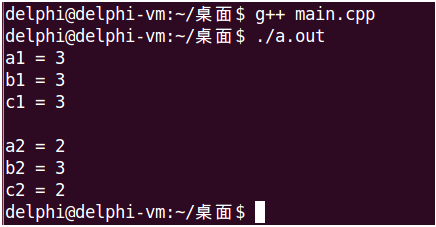

inline关键字声明内联函数inline int func(int a, int b)
{
return a < b ? a : b;
}#include <stdio.h>
#define MAX(a, b) ((a) < (b) ? (a) : (b))
inline int max(int a, int b)
{
return a < b ? a : b;
}
int main(int argc, char *argv[])
{
int a1 = 1;
int b1 = 3;
int c1 = MAX(++a1, b1);
int a2 = 1;
int b2 = 3;
int c2 = max(++a2, b2);
printf("a1 = %d\n", a1);
printf("b1 = %d\n", b1);
printf("c1 = %d\n", c1);
printf("\n");
printf("a2 = %d\n", a2);
printf("b2 = %d\n", b2);
printf("c2 = %d\n", c2);
return 0;
}
__attribute__((always_inline))__attribute__((always_inline)) int func(int a, int b)
{
return a < b ? a : b;
}C++语言对内联函数具有以下限制：
注意：这些只是C++语言本身对内联函数的限制，现代C++编译器可以突破这些限制，实际上，只要函数不是过于夸张，内联一般都是可以成功的。